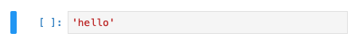
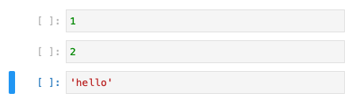
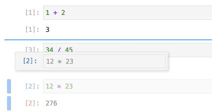

JupyterLab¶
JupyterLab est un environnement pour développer code et documentation dans un navigateur web.
Dans l’image ci-dessus vous pouvez voir
un notebook avec des formules mathématiques
une image interactive
du code Python
Pourquoi « Jupyter »?¶
Le nom Ju-pyt-R fait référence aux trois langages de programmation
Julia
Python
R
Le logo Juypter représente les lunes de la planète Jupiter qui sont:
Io
Europe
Ganymède
Callisto
Ces quatre satellites de Jupiter ont été découverts en 1610 par Galilée, fondateur d’une pensée scientifique basé sur l’observation.
Il a proposé un modèle héliocentriste (=soleil au centre) avec des mouvements satellitaires des planètes autour du soleil et des lunes autour des planètes.
Créer un notebook¶
Choisissez File > New > Notebook
Choisissez un noyau (kernel): Python 3
Alternativement:
Choississez New Launcher (ou cliquez sur + dans le navigateur)
Choisissez dans le Launcher: Notebook Python 3

Une cellule vide¶
Au début vous avez juste une cellule vide.

Vous notez:
une barre de sélection bleue
des crochets encore vides
Évaluler une cellule¶
Écrivez une expression Python dans la cellule, et appuyez simultanément sur les touches maj + retour pour exécuter l’expression.
Alternativement vous pouvez cliquer sur le bouton ▶︎ dans le menu.
Vous notez que:
le numéro de l’exécution apparait dans les crochets (1)
le résultat de l’expression est affiché après la cellule code
une nouvelle cellule vide est ajoutée
Évaluer de nouveau¶
Vous pouvez ajouter une autre expression et évaluer de nouveau la cellule.
Vous notez que:
le numéro de l’exécution a été incrémenté (2)
une nouvelle cellule vide est ajoutée
Exercice¶
Ajouter 4-5 cellules avec des expressions Python (soustractions, multiplications, divisions)
Mode edit/command¶
Une cellule est en mode edit s’il y a un curseur d’insertion dans la cellule.

Vous basculez vers le mode command en
cliquant en dehors de la cellule
en appuyant sur la touche escape

Vous notez que:
la cellule est grisée
le curseur a disparu
Ajouter des cellules¶
Vous pouvez ajouter des cellules
avec le bouton (+) du menu, ou
avec les raccourcis A et B
Par rapport à la cellule active (barre bleue) vous pouvez ajouter une nouvelle cellule
A en dessus (above)
B en dessous (below)
Attention: il faut être dans le mode command pour utiliser ces raccourcis.
Couper, copier, coller¶
En mode command vous pouvez couper, copier et coller des cellules avec les raccourcis:
X coupe la cellule
C copie la cellule
V colle la cellule
Par exemple la cellule 'hello' a été coupée avec la touche X
et ensuite collée à la fin de la cellule 2 avec la touche V

Attention: La touche cmd n’est pas nécessaire en mode command.
Déplacer une cellule¶
Vous pouvez cliquer à droite de la barre bleu pour déplacer une cellule. La ligne bleu vous indique la nouvelle position de la cellule.

Sélection multiple¶
Avec les touches de flèche haut/bas (▲ et ▼) vous pouvez naviguer parmi les cellules.
En appuyant simultanément sur la touche maj et haut/bas, vous pouvez sélectionner des cellules multiples.
La sélection multiple est utile pour couper, copier et coller multiples cellules.
Évaluer multiples lignes¶
Quand une cellule est exécutée, toutes les expressions sont évaluées, mais seulement le dernier résultat est affiché.
Vous pouvez afficher toutes les valeurs en utilisant la fonction print().
print(12 + 23)
print(23 * 34)
print(12 / 23)
35
782
0.5217391304347826
Renommer un notebook¶
Cliquer avec le bouton droit dans le navigateur des fichiers vous permet d’accéder à un menu contextuel qui vous permet de renommer votre notebook.
Résumé¶
JupyterLab est un editeur web pour programmer en Python.
Il permet de combiner code et documentation dans un seul document.
Ses documents s’apellent Jupyter notebook.
Un Jupyter notebook est divisé en cellules.
Un serveur JupyterLab est lancé à partir d’un terminal avec la commande
jupyter lab.
Les raccourcis:
Aajouter une cellule en dessus (above)Bajouter une cellule en dessous (below)Ccopier une celluleXcouper une celluleVcoller une cellule
Exercice¶
créez un dossier leçon 1
renommez le document Untitled.ipynb en Intro JuypterLab.ipynb
déplacez-le dans le dossier leçon 1